전기철도기사 (2019-08-04 기출문제)
1과목: 전기철도공학
1. 자동장력조정장치의 설치에 대한 설명으로 틀린 것은?
- 인류구간의 한쪽에 자동장력조정장치를 설치할 경우 구배가 낮을쪽에 설치한다.
- 조가선 및 전차선은 억제저항이 적게 되도록 시설한다.
- 활차식과 도르래식은 표중장력에 맞는 활차비와 종류를 선택한다.
- 수동장력조정장치를 필요로 하지 않는 합성전차선에 턴버클식을 사용한다.
(정답률: 81%)

2. 교류 급전측 단상 단락사고 고장 전류(Is)계산식은? (단, Is : 고장전류[kA], V : 급전전압[kV], Z0 : 전원임피던스[Ω], ZTR : 변압기임피던스[Ω], ZL : 선로임피던스[Ω], rg : 고장점 저항[Ω] 이다.)
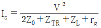
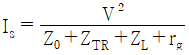
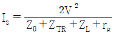
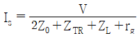
(정답률: 75%)
3. 강체전차선로에서 R-Bar 브래킷의 종류가 아닌 것은?
- 가동형
- 단축형
- 확장형
- 고정형
(정답률: 84%)
4. 고속철도 전차선의 사전 이도량 54/2000에 대한 2번째 드로퍼의 처짐량(m)은? (단, 전차선의 사전 이도구간 길이는 45m, 첫 번째 드로퍼 거리는 4.5m, 두 번째 드로퍼 거리는 11.25m 이다.)
- 0.01077
- 0.01177
- 0.01277
- 0.01377
(정답률: 77%)
5. 전차선의 장력(N)을 T, 전차선의 단위 길이 질량(kg/m)을 p라 할 때 파동전파속도(m/sec) C는?
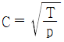
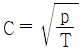
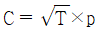
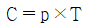
(정답률: 74%)
6. 전차선의 편위 결정 시 고려 사항이 아닌 것은?
- 차량동요에 의한 팬터그래프의 편위
- 가동브래킷 회전에 의한 전차선의 편위
- 풍압에 의한 전차선의 편위
- 장력장치 변동에 의한 전차선의 편위
(정답률: 77%)
7. 에어섹션의 평행부부분에서 전차선 상호간의 이격거리(mm)로 맞는 것은? (단, 속도등급 300킬로급 이상)
- 100 이상
- 150 이상
- 200 이상
- 500 이상
(정답률: 77%)
8. 교류급전방식의 특징이 아닌 것은?
- 대용량 중·장거리 수송에 유리하다.
- 에너지 이용률이 높다.
- 통신유도장해 대책이 필요 없다.
- 사고 시 선택 차단이 용이하다.
(정답률: 80%)
9. 주전동기의 단자전압이 1200V, 전류가 300A 인 경우, 전기차의 출력(kW)은? (단, 주전동기의 효율은 0.9, 전동기의 대수는 3대이다.)
- 648
- 810
- 972
- 1134
(정답률: 78%)
10. 절연구분장치에 대한 설명으로 틀린 것은?
- 절연구분장치 양단의 전차선과 조가선을 상호 균압한다.
- 절연구간을 갖는 인류구간의 길이는 600m 이하로 한다.
- 절연구분장치 구간의 조가선은 팬터그래프 통과로 생기는 아크(Arc)에 의한 손상이 없도록 시설한다.
- 절연구분장치 길이를 선정할 때는 팬터그래프의 설치 간격을 고려할 필요가 없다.
(정답률: 78%)
11. 커티너리 방식의 경우 가선계의 최고설계속도는 팬터그래프에 의해 발생하는 가공전차선 동요임펄스 파동전파속도의 몇 % 이하가 되도록 하는가?
- 15
- 25
- 50
- 70
(정답률: 60%)
12. 경간 중앙에서의 전차선 편위 값(uN)을 구하는 계산식은? (단, uN1, uN2는 양단 전주에서의 편위 값, 곡선 외측이 +값)
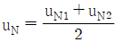
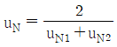
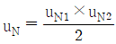
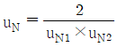
(정답률: 80%)
13. 전식방지 대책을 위한 배류법에 해당하지 않는 것은?
- 직접배류법
- 선택배류법
- 순환배류법
- 강제배류법
(정답률: 62%)
14. 전차선은 110mm2이고, 잔존 단면적이 67.6mm2이며, 안전율이 2.2인 전차선의 허용장력은 약 몇 kgf인가? (단, 전차선의 항장력은 2400kgf 이다.)
- 670
- 1075
- 1625
- 3240
(정답률: 62%)
15. 전기차의 VVVF 제어방식이란?
- 주파수와 전류를 제어하는 방식
- 주파수와 전압을 제어하는 방식
- 주파수와 저항을 제어하는 방식
- 주파수와 리액턴스를 제어하는 방식
(정답률: 80%)
16. 전차선 110mm2 접촉점에 흐르는 아크전류를 I(A), 지속시간을 t(sec)라 할 때 전차선이 단선되는 시점을 나타내는 식은?
- I · t ≥ 750
- I · t ≥ 850
- I · t ≥ 950
- I · t ≥ 1⑤0
(정답률: 63%)
17. 강체가선방식에서 R-BAR의 구성에 해당되지 않는 것은?
- 연결금구
- 드로퍼
- 애자섹숀
- 단말크램프
(정답률: 60%)
18. 부동율을 ε, 가선과 팬터그래프가 공진하는 속도를 Vc라 할 때, 이선을 시작하는 속도 Vr을 나타내는 식은?
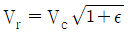
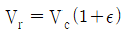
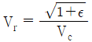
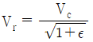
(정답률: 78%)
19. 고속전철에서 횡진동에 제한 받는 개소 또는 터널 내에서 이격거리 확보개소에 사용하는 급전선의 지지방식으로 맞는 것은?
- 수평조가방식
- V형조가방식
- 현수조가방식
- 경사조가방식
(정답률: 62%)
20. 제3궤조 방식에 대한 설명으로 틀린 것은?
- 주행레일을 귀선로로 사용하는 경우 전식방지대책이 필요하다.
- 차량과 POWER RAIL과의 규정된 이격거리를 유지하여야 한다.
- 제3궤조 방식의 도체는 무겁고 기계적 강도가 높아야 한다.
- 급전레일은 낮게 설치되므로 안전을 위해 필요한 곳에 보호덮개를 설치한다.
(정답률: 67%)
2과목: 전기철도 구조물공학
21. 힘의 3요소가 아닌 것은?
- 방향
- 시간
- 크기
- 작용점
(정답률: 87%)
22. 그림과 같은 단면의 X-X축에 대한 단면1차 모멘트(cm3)는? (치수단위는 [cm])
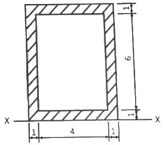
- 48
- 96
- 144
- 192
(정답률: 72%)
23. 그림과 같은 트러스 빔에서 A에 해당하는 것은?
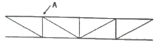
- 지점
- 절점
- 입속
- 경사재
(정답률: 77%)
24. 재료의 전단탄성계수(G)가 80GPa, 포아송비는 0.3일 때, 종탄성계수 E(GPa)는?
- 48
- 104
- 200
- 208
(정답률: 63%)
25. 그림과 같은 라멘의 부정정차수는?
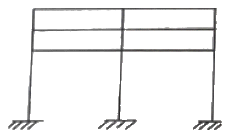
- 9차
- 12차
- 15차
- 18차
(정답률: 64%)
26. 다음 구조물 중 2차원 구조물로 맞는 것은?
- 패널(panel)
- 트러스(truss)
- 라멘(rahmen)
- 봉(rod)
(정답률: 66%)
27. 가공 전차선로 도면의 프리텐션 콘크리트 전주에 11-30-N5000으로 표기되어 있다. 여기서 11은 무엇을 나타내는가?
- 전주의 지름
- 전주의 설계 휨모멘트
- 전주의 압축력
- 전주의 길이
(정답률: 65%)
28. 가공 전차선로에서 표준경간 S(m), 선로의 곡선반경 R(m)라 할 때 전차선의 편위 d(m)을 구하는 식은?
- S / 8R
- S2 / 8R
- S / 16R
- S2 / 16R
(정답률: 62%)
29. 전기철도구조물의 강도를 계산하기 위한 설계조건에 해당되지 않는 것은?
- 선로조건(곡선반지름)
- 지지주가 설치되어 있는 위치의 기상조건
- 해당선로의 급전방식과 가선방식
- 전압강하와 전선의 온도상승
(정답률: 73%)
30. 크기가 같고 방향이 반대인 나란한 두 힘은?
- 우력
- 비틀림
- 반력
- 작용력
(정답률: 75%)
31. 각 부재가 마찰이 없는 힌지로 연결되어 축방향력만 받는 부재는?
- 봉(rod)
- 기둥(column)
- 보(beam)
- 트러스(truss)
(정답률: 79%)
32. 단면의 폭이 10cm, 높이가 20cm인 직사각형 단면과 지름이 d인 원형단면이 있다. 직사각형 단면과 원형단면의 단면계수가 같다고 할 때, 원형단면의 직경은 약 몇 cm 인가?
- 15.03
- 11.93
- 18.93
- 23.86
(정답률: 56%)
33. 전차선로에서 지선의 종류로 틀린 것은?
- 단지선
- V형지선
- 2단지선
- 삼각지선
(정답률: 82%)
34. 가동 브래킷의 호칭이 “G3.0 L960 I”라고 되어 있다면, 여기에서 L이 의미하는 것은?
- 가고
- 전차선 높이
- 게이지
- 작용력에 대한 형식
(정답률: 75%)
35. 지선은 전구에 작용하는 수평하중의 몇 [%]를 부담하는가?
- 85
- 90
- 95
- 100
(정답률: 72%)
36. 지름 D, 길이 ℓ인 원기둥의 세장비는?
- 4ℓ / D
- 8ℓ / D
- 4D / ℓ
- 8D / ℓ
(정답률: 70%)
37. 가공전차선로에 설치된 단독전철주의 지면으로부터 높이는 11m이다. 이 전주에 수평분포하중 32kgf/m가 작용하는 경우 지면과의 경계점 모멘트(kgf·m)는?
- 1846
- 1896
- 1936
- 1986
(정답률: 75%)
38. 비례한도에 대한 설명으로 맞는 것은?
- 응력과 변형율이 비례하는 최대점
- 응력의 발생으로 변형을 일으켜 파괴하는 한계
- 인장시험에 있어서 작용하는 최대 하중점
- 응력의 증가에 대하여 변형이 갑자기 증가하는 한계점
(정답률: 67%)
39. 보(Beam)가 하중에 받게 되면 직선이던 부재축은 변형하여 곡선을 이루게 된다. 이 변형된 축선을 무엇이라 하는가?
- 연성곡선
- 탄성곡선
- 수평곡선
- 수직곡선
(정답률: 67%)
40. 지점(支點)에 대한 설명으로 옳은 것은?
- 고정지점은 이동은 할 수 없으나 회전은 가능하다.
- 지점에는 이동지점, 고정지점 및 모멘트지점이 있다.
- 이동지점에서 반력은 수직한 방향으로 1개만 일어난다.
- 회전하고 있는 구조물 또는 부재를 받치는 점을 지점이라 한다.
(정답률: 67%)
3과목: 전기자기학
41. 반지름 a(m)의 구 도체에 전하 Q(C)가 주어질 때 구 도체 표면에 작용하는 정전응력은 몇 N/m2 인가?
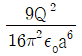
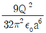
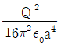
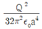
(정답률: 50%)
42. 무한장 직선형 도선에 I(A)의 전류가 흐를 경우 도선으로부터 R(m) 떨어진 점의 자속밀도 B(Wb/m2)는?
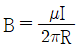
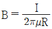
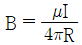
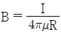
(정답률: 61%)
43. 강자성체의 세 가지 특성에 포함되지 않는 것은?
- 자기포화 특성
- 와전류 특성
- 고투자율 특성
- 히스테리시스 특성
(정답률: 63%)
44. 단면적이 s(m2), 단위 길이에 대한 권수가 n(회/m)인 무한히 긴 솔레노이드의 단위 길이당 자기인덕턴스(H/m)는?
- μ·s·n
- μ·s·n2
- μ·s2·n
- μ·s2·n2
(정답률: 72%)
45. 전하 q(C)가 진공 중의 자계 H(AT/m)에 수직방향으로 v(m/s)의 속도로 움직일 때 받는 힘은 몇 N인가? (단, 진공 중의 투자율은 μo 이다.)
- qvH
- μoqH
- πqvH
- μoqvH
(정답률: 62%)
46. 정전용량이 1μF이고 판의 간격이 d인 공기콘덴서가 있다. 두께
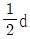
, 비유전율 εr=2 유전체를 그 콘덴서의 한 전극면에 접촉하여 넣었을 때 전체의 정전용량(μF)은?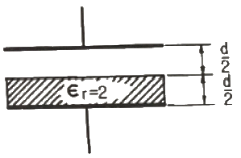
- 2
- 1/2
- 4/3
- 5/3
(정답률: 67%)
47. 송전선의 전류가 0.01초 사이에 10kA 변화될 때 이 송전선에 나란한 통신선에 유도되는 유도 전압은 몇 V인가? (단, 송전선과 통신선 간의 상호유도계수는 0.3mH 이다.)
- 30
- 300
- 3000
- 30000
(정답률: 62%)
48. 단면적 15cm2의 자석 근처에 같은 단면적을 가진 철편을 놓을 때 그 곳을 통하는 자속이 3×10-4Wb이면 철편에 작용하는 흡인력은 약 몇 N인가?
- 12.2
- 23.9
- 36.6
- 48.8
(정답률: 56%)
49. 전기 저항에 대한 설명으로 틀린 것은?
- 저항의 단위는 옴(Ω)을 사용한다.
- 저항률(ρ)의 역수를 도전율이라고 한다.
- 금속선의 저항 R은 길이 ℓ에 반비례한다.
- 전류가 흐르고 있는 금속선에 있어서 임의 두 점간의 전위차는 전류에 비례한다.
(정답률: 70%)
50. 자계의 백터포텐셜을 A라 할 때 자계의 시간적 변화에 의하여 생기는 전계의 세기 E는?
- E = rot A
- rot E = A
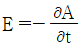
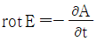
(정답률: 74%)
51. 변위전류와 가장 관계가 깊은 것은?
- 도체
- 반도체
- 유전체
- 자성체
(정답률: 60%)
52. 진공 중에서 점 P(1, 2, 3) 및 점 Q(2, 0, 5)에 각각 300μC, -100μC인 점전하가 놓여 있을 때 점전하 –100μC에 작용하는 힘은 몇 N인가?
- 10i – 20j + 20k
- 10i + 20j - 20k
- -10i + 20j + 20k
- -10i + 20j – 20k
(정답률: 61%)
53. 환상철심의 평균 자계의 세기가 3000 AT/m 이고, 비투자율이 600인 철심 중의 자화의 세기는 약 몇 Wb/m2 인가?
- 0.75
- 2.26
- 4.52
- 9.04
(정답률: 59%)
54. 다음 금속 중 저항률이 가장 작은 것은?
- 은
- 철
- 백금
- 알루미늄
(정답률: 60%)
55. 원통 좌표계에서 일반적으로 벡터가 A=5r sin øaz로 표현될 때 점(2, π/2, 0)에서 curl A를 구하면?
- 5ar
- 5πaø
- -5aø
- -5πaø
(정답률: 65%)
56. 전자파의 특성에 대한 설명으로 틀린 것은?
- 전자파의 속도는 주파수와 무관하다.
- 전파 Ex를 고유임피던스로 나누면 자파 Hy가 된다.
- 전파 Ex와 자파 Hy의 진동방향은 진행 방향에 수평인 종파이다.
- 매질이 도전성을 갖지 않으면 전파 Ex와 자파 Hy는 동위상이 된다.
(정답률: 56%)
57. 도전도 k=6×1017℧/m, 투자율
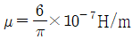
인 평면도체 표면에 10kHz의 전류가 흐를 때, 침투깊이 δ(m)는?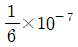
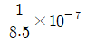
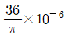
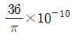
(정답률: 53%)
58. 평행판 콘덴서의 극간 전압이 일정한 상태에서 극간에 공기가 있을 때의 흡인력을 F1, 극판 사이에 극판 간격의 2/3 두께의 유리판(εr=10)을 삽입할 때의 흡인력을 F2라 하면 F2/F1는?
- 0.6
- 0.8
- 1.5
- 2.5
(정답률: 58%)
59. 정전용량이 각각 C1, C2, 그 사이의 상호 유도계수가 M인 절연된 두 도체가 있다. 두 도체를 가는 선을 연결할 경우, 정전용량은 어떻게 표현되는가?
- C1 + C2 - M
- C1 + C2 + M
- C1 + C2 + 2M
- 2C1 + 2C2 + M
(정답률: 64%)
60. 길이 ℓ(m)인 동축 원통 도체의 내외원통에 각각 +λ, -λ(C/m)의 전하가 분포되어 있다. 내외원통 사이의 유전율 ε인 유전체가 채워져 있을 때, 전계의 세기(V/m)는? (단, V는 내외원통 간의 전위차, D는 전속밀도이고, a, b는 내외원통의 반지름이며, 원통 중심에서의 거리 r은 a＜r＜b 인 경우이다.)
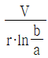
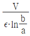
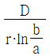
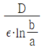
(정답률: 50%)
4과목: 전력공학
61. 가공선 계통은 지중선 계통보다 인덕턴스 및 정전용량이 어떠한가?
- 인덕턴스, 정전용량이 모두 작다.
- 인덕턴스, 정전용량이 모두 크다.
- 인덕턴스는 크고, 정전용량은 작다.
- 인덕턴스는 작고, 정전용량은 크다.
(정답률: 57%)
62. 부하전류의 차단에 사용되지 않는 것은?
- DS
- ACB
- OCB
- VCB
(정답률: 61%)
63. 송전선의 특성임피던스는 저항과 누설컨덕턴스를 무시하면 어떻게 표현되는가? (단, L은 선로의 인덕턴스, C는 선로의 정전용량이다.)
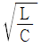
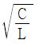
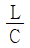
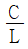
(정답률: 57%)
64. 변성기의 정격부담을 표시하는 단위는?
- W
- S
- dyne
- VA
(정답률: 53%)
65. 케이블의 전력 손실과 관계가 없는 것은?
- 철손
- 유전체손
- 시스손
- 도체의 저항손
(정답률: 60%)
66. 연가에 의한 효과가 아닌 것은?
- 직렬공진의 방지
- 대지정전용량의 감소
- 통신선의 유도장해 감소
- 선로정수의 평형
(정답률: 50%)
67. 수력발전설비에서 흡출관을 사용하는 목적으로 옳은 것은?
- 압력을 줄이기 위하여
- 유효낙차를 늘리기 위하여
- 속도변동률을 적게 하기 위하여
- 물의 유선을 일정하게 하기 위하여
(정답률: 65%)
68. 전압요소가 필요한 계전기가 아닌 것은?
- 주파수 계전기
- 동기탈조 계전기
- 지락 과전류 계전기
- 방향성 지락 과전류 계전기
(정답률: 50%)
69. 원자로에서 중성자가 원자로 외부로 유출되어 인처에 위험을 주는 것을 방지하고 방열의 효과를 주기 위한 것은?
- 제어재
- 차폐재
- 반사체
- 구조재
(정답률: 67%)
70. 3상 무부하 발전기의 1선 지락 고장 시에 흐르는 지락 전류는? (단, E는 접지된 상의 무부하 기전력이고, Zo, Z1, Z2는 발전기의 영상, 정상, 역상 임피던스이다.)
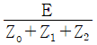
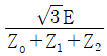
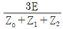
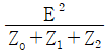
(정답률: 53%)
71. 어느 수용가의 부하설비는 전등설비가 500W, 전열설비가 600W, 전동기 설비가 400W, 기타설비가 100W 이다. 이 수용가의 최대수용전력이 1200W이면 수용률은 몇 % 인가?
- 55
- 65
- 75
- 85
(정답률: 70%)
72. 가공지선에 대한 설명 중 틀린 것은?
- 유도뢰 서지에 대하여도 그 가설구간 전체에 사고방지에 효과가 있다.
- 직격뢰에 대하여 특히 유효하며 탑 상부에 시설하므로 뇌는 주로 가공지선에 내습한다.
- 송전선의 1선 지락 시 지락전류의 일부가 가공지선에 흘러 차폐작용을 하므로 전자유도장해를 적게 할 수 있다.
- 가공지선 때문에 송전선로의 대지정전용량이 감소하므로 대지사이에 방전할 때 유도전압이 특히 커서 차폐효과가 좋다.
(정답률: 60%)
73. 전력 원선도에서는 알 수 없는 것은?
- 송수전할 수 있는 최대전력
- 선로 손실
- 수전단 역률
- 코로나손
(정답률: 68%)
74. 각 전력계통을 연계선으로 상호 연결하였을 때 장점으로 틀린 것은?
- 건설비 및 운전경비를 절감하므로 경제급전이 용이하다.
- 주파수의 변화가 작아진다.
- 각 전력계통의 신뢰도가 증가된다.
- 선로 임피던스가 증가되어 단락전류가 감소된다.
(정답률: 60%)
75. 인터록(interlock)의 기능에 대한 설명으로 옳은 것은?
- 조작자의 의중에 따라 개폐되어야 한다.
- 차단기가 열려 있어야 단로기를 닫을 수 있다.
- 차단기가 닫혀 있어야 단로기를 닫을 수 있다.
- 차단기와 단로기를 별도로 닫고, 열 수 있어야 한다.
(정답률: 61%)
76. 플리커 경감을 위한 전력 공급측의 방안이 아닌 것은?
- 공급전압을 낮춘다.
- 전용 변압기로 공급한다.
- 단독 공급계통을 구성한다.
- 단락용량이 큰 계통에서 공급한다.
(정답률: 60%)
77. 같은 선로와 같은 부하에서 교류 단상 3선식은 단상 2선식에 비하여 전압강하와 배전효율이 어떻게 되는가?
- 전압강하는 적고, 배전효율은 높다.
- 전압강하는 크고, 배전효율은 낮다.
- 전압강하는 적고, 배전효율은 낮다.
- 전압강하는 크고, 배전효율은 높다.
(정답률: 63%)
78. 다음 중 송전선로의 코로나 임계전압이 높아지는 경우가 아닌 것은?
- 날씨가 맑다.
- 기압이 높다.
- 상대공기밀도가 낮다.
- 전선의 반지름과 선간거리가 크다.
(정답률: 53%)
79. 수력발전소의 분류 중 낙차를 얻는 방법에 의한 분류 방법이 아닌 것은?
- 댐식 발전소
- 수로식 발전소
- 양수식 발전소
- 유역 변경식 발전소
(정답률: 54%)
80. 역률 80%, 500kVA의 부하설비에 100kVA의 진상용 콘덴서를 설치하여 역률을 개선하면 수전점에서의 부하는 약 몇 kVA가 되는가?
- 400
- 425
- 450
- 475
(정답률: 43%)